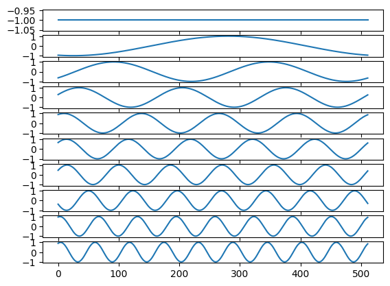

Time and frequency#
import numpy as np
import pandas as pd
pd.set_option('mode.copy_on_write', True)
import matplotlib.pyplot as plt
# Set default colormap.
plt.rcParams['image.cmap'] = 'gray'
ecg = pd.read_csv('data/ecg.csv').iloc[:512]
ecg
| Amplitude | |
|---|---|
| 0 | -127 |
| 1 | -162 |
| 2 | -197 |
| 3 | -229 |
| 4 | -245 |
| ... | ... |
| 507 | -289 |
| 508 | -274 |
| 509 | -267 |
| 510 | -261 |
| 511 | -256 |
512 rows × 1 columns
plt.plot(ecg)
[<matplotlib.lines.Line2D at 0x7fdd28cdd150>]
ecg_arr = np.array(ecg['Amplitude'])
first_10 = ecg_arr[:10]
first_10
array([-127, -162, -197, -229, -245, -254, -261, -265, -268, -268])
basis_functions = np.eye(10)
fig, axes = plt.subplots(10, 1)
for row_no in range(10):
axes[row_no].plot(basis_functions[row_no])

plt.imshow(basis_functions)
<matplotlib.image.AxesImage at 0x7fdd26ab1790>

first_10_col = first_10[:, None]
first_10_col
array([[-127],
[-162],
[-197],
[-229],
[-245],
[-254],
[-261],
[-265],
[-268],
[-268]])
fig, axes = plt.subplots(1, 2)
axes[0].imshow(first_10_col)
axes[1].imshow(basis_functions)
<matplotlib.image.AxesImage at 0x7fdd268ec2d0>
multiplied = basis_functions * first_10_col
multiplied.astype(int)
array([[-127, 0, 0, 0, 0, 0, 0, 0, 0, 0],
[ 0, -162, 0, 0, 0, 0, 0, 0, 0, 0],
[ 0, 0, -197, 0, 0, 0, 0, 0, 0, 0],
[ 0, 0, 0, -229, 0, 0, 0, 0, 0, 0],
[ 0, 0, 0, 0, -245, 0, 0, 0, 0, 0],
[ 0, 0, 0, 0, 0, -254, 0, 0, 0, 0],
[ 0, 0, 0, 0, 0, 0, -261, 0, 0, 0],
[ 0, 0, 0, 0, 0, 0, 0, -265, 0, 0],
[ 0, 0, 0, 0, 0, 0, 0, 0, -268, 0],
[ 0, 0, 0, 0, 0, 0, 0, 0, 0, -268]])
plt.imshow(multiplied)
<matplotlib.image.AxesImage at 0x7fdd26824050>

reconstructed = multiplied.sum(axis=0)
reconstructed
array([-127., -162., -197., -229., -245., -254., -261., -265., -268.,
-268.])
first_10
array([-127, -162, -197, -229, -245, -254, -261, -265, -268, -268])
n = len(ecg_arr)
n
512
full_basis = np.eye(n)
plt.imshow(full_basis)
full_basis.astype(int)
array([[1, 0, 0, ..., 0, 0, 0],
[0, 1, 0, ..., 0, 0, 0],
[0, 0, 1, ..., 0, 0, 0],
...,
[0, 0, 0, ..., 1, 0, 0],
[0, 0, 0, ..., 0, 1, 0],
[0, 0, 0, ..., 0, 0, 1]])

ecg_arr_col = ecg_arr[:, None]
full_multiplied = full_basis * ecg_arr_col
full_reconstructed = full_multiplied.sum(axis=0)
np.all(full_reconstructed == ecg_arr)
True
ft_ecg = np.fft.rfft(ecg_arr)
ft_ecg
array([-3.52050000e+04+0.00000000e+00j, -6.62376908e+04+2.11810383e+04j,
-2.60067791e+04-3.19442368e+04j, 5.42283644e+03-1.74397806e+04j,
1.02075721e+04-5.22218912e+03j, 1.46823108e+04-1.65363235e+04j,
3.03950917e+03-5.80300975e+03j, -5.71787596e+03+1.42463585e+04j,
1.17288363e+04-3.61990041e+03j, 1.05803896e+04-5.07849495e+03j,
-7.87674197e+03+1.13618464e+04j, -4.08359073e+03+4.12351643e+03j,
1.21418408e+04+1.20449702e+03j, -3.96779181e+03-2.08743714e+03j,
-1.21397399e+04-9.21375492e+03j, 5.42726889e+03+4.45011064e+03j,
5.60113518e+03+4.67333535e+03j, -7.68100482e+02-9.98287455e+03j,
1.22285529e+03-1.04612400e+03j, -2.01955523e+03+1.00000928e+04j,
4.32769771e+03-3.71996200e+03j, 7.39935671e+03-5.05129445e+03j,
-4.06620392e+03+3.70320609e+03j, -3.55602222e+03+1.82608525e+03j,
6.65302706e+03+1.20867355e+03j, 1.91609823e+02-6.41202216e+02j,
-4.92573057e+03-3.43017634e+03j, 2.48017655e+03+2.58288932e+03j,
3.21915994e+03+3.31391374e+03j, -2.84167274e+02-4.44280319e+03j,
2.69130039e+02-1.81063905e+03j, -9.71807343e+02+4.49634126e+03j,
1.05502122e+03-3.45499289e+02j, 2.70057601e+03-1.93289593e+03j,
-1.67381869e+03+1.17678414e+03j, -1.62332334e+03+7.37040391e+02j,
2.59500891e+03+3.09647591e+02j, 4.20248182e+02-2.95154380e+02j,
-1.62600130e+03-1.24150263e+03j, 5.84513215e+02+5.33414568e+02j,
8.45916367e+02+1.02522266e+03j, -1.10723729e+02-1.28703534e+03j,
-6.25131096e+00-8.68455262e+02j, -1.62137222e+02+6.04282839e+02j,
5.33696238e+02-3.06732372e+02j, 7.14223221e+02-5.40432223e+02j,
2.55244092e+01+1.21430671e+02j, -1.63986050e+02+1.16338038e+01j,
5.31396514e+02-3.02086418e+01j, 2.98940514e+02-1.17381829e+01j,
-3.33808376e+01-4.04194521e+01j, 1.68098790e+02-1.42120146e+02j,
1.57869122e+02-2.39252670e+02j, 1.56647765e+02-2.18028615e+02j,
1.36038730e+02-1.76976575e+01j, 8.29497788e+01-5.70126317e+01j,
1.74307311e+02-1.02342621e+02j, 1.22213898e+01-1.11791985e+02j,
2.40980331e+02-1.77296310e+02j, 1.89129525e+02-1.34639168e+02j,
6.07231949e+01-1.72687250e+02j, -7.25629455e+00-1.60097178e+02j,
1.80314938e+02-4.15106730e+00j, 2.42240123e+02-2.14523083e+02j,
1.24648232e+02-1.73015765e+02j, 1.08762517e+02-2.22494495e+02j,
2.56068607e+02-9.33563221e+01j, 1.97625173e+02-4.45751361e+01j,
-9.02480833e+00-1.34321380e+02j, 8.94990932e+01-1.57304826e+02j,
1.12904383e+02-4.40094285e+01j, 2.81714089e+01-2.19074108e+02j,
2.22926094e+02-2.22158179e+02j, 9.39388656e+01-9.71110663e+01j,
1.01684423e+02-2.79802099e+02j, 3.04009454e+02-2.46075351e+02j,
2.79643541e+02+5.15398128e+01j, 2.65459856e+01-4.11219985e+00j,
1.41471775e+02-5.69974372e+01j, 5.85373472e+01+4.11514018e+01j,
-7.09098702e+01-1.16315810e+02j, 1.81917829e+02-2.95645247e+02j,
3.11318417e+01-4.77288610e+01j, -1.11792256e+02-1.95066063e+02j,
1.88312930e+02-3.15337146e+02j, 1.26304638e+02-7.53564414e+01j,
9.28061013e+01-1.41147060e+02j, 2.03544869e+02-1.79066354e+02j,
1.78220815e+02-5.61184708e+01j, 3.96535206e+01-1.85474995e+02j,
1.53053296e+02-1.89162650e+02j, 1.91208662e+02-8.44209979e+01j,
1.24539033e+02-8.95422521e+01j, 1.58851089e+02-1.52709411e+02j,
9.09902051e+01-2.61526628e+01j, 9.17601639e+01-7.18944921e+01j,
6.47899142e+01-1.82989415e+02j, 1.15195489e+02-1.64791658e+02j,
1.54362845e+02-9.11177025e+01j, 9.97942405e+01-8.93906972e+01j,
1.20377947e+02-1.27197410e+02j, 9.35095203e+01-1.32278762e+02j,
1.01953199e+02-9.01107517e+01j, 1.79604040e+02-1.56353308e+02j,
1.87852798e+02-7.74127474e+01j, 4.65232731e+01-5.12509817e+01j,
6.66602974e+01-1.25527162e+02j, 2.03256106e+02-8.71477366e+01j,
7.83580408e+01-7.32276078e+01j, 8.50784801e+01-1.27858365e+02j,
1.53287895e+02-3.88444463e+01j, 7.51945731e+01-4.89032935e+01j,
8.14031187e+01-1.56123986e+02j, 1.40680793e+02-8.47071703e+01j,
9.96382432e+01+4.05238734e+00j, 1.06567607e+02-1.07150320e+02j,
1.32748449e+02-5.90618412e+01j, 4.05371241e+01-1.37010406e+01j,
3.78102459e+01-8.14416313e+01j, 1.23135682e+02-1.00115558e+02j,
6.91450183e+01-9.17536292e+01j, 8.66628155e+01-9.17848803e+01j,
1.34851605e+02-4.04881096e+01j, 9.60252585e+01-2.97392933e+01j,
5.71433544e+01-8.11352619e+01j, 9.36306659e+01-5.77828234e+01j,
7.11064633e+01-1.32037060e+01j, 6.03643419e+01-7.48789567e+01j,
4.80000000e+01-8.30000000e+01j, 6.19100213e+01-7.49164626e+01j,
9.45614389e+01-6.39814310e+01j, 8.53565019e+01-8.47278160e+01j,
6.26828384e+01-6.98661773e+01j, 6.81127182e+01-4.85095890e+01j,
8.12154948e+01-4.65368384e+01j, 9.31530556e+01-5.96190481e+01j,
5.59760722e+01-5.20144813e+01j, 5.74880963e+01-5.43493726e+01j,
7.84497018e+01-7.91362877e+01j, 9.96144988e+01-7.74957168e+01j,
5.97035354e+01-5.12911746e+01j, 5.30723009e+01-5.31348701e+01j,
7.79344395e+01-5.40415003e+01j, 6.58644478e+01-7.36164298e+01j,
6.95619440e+01-7.12441154e+01j, 7.55557610e+01-6.44168786e+01j,
9.32260646e+01-3.18190167e+01j, 8.92604894e+01-6.81535476e+01j,
8.26284595e+01-7.31445385e+01j, 7.27652271e+01-3.11864555e+01j,
7.26908529e+01-2.86045233e+01j, 1.07003933e+02-6.83268762e+01j,
9.54526609e+01-5.96724559e+01j, 5.62605919e+01-7.84907635e+00j,
5.38494134e+01-4.09984592e+01j, 8.21737921e+01-4.88761345e+01j,
5.31595125e+01-4.98454946e+01j, 5.55968902e+01-8.32396752e+01j,
9.89636079e+01-3.02820795e+01j, 8.72469662e+01-1.93733244e+01j,
7.02353390e+01-7.63720995e+01j, 8.98042980e+01-5.37503192e+01j,
7.17087759e+01-9.36947471e+00j, 7.87900326e+01-3.64192203e+01j,
9.67094436e+01-3.91805068e+01j, 5.68759172e+01-6.29413718e+00j,
5.37849280e+01-3.77961620e+01j, 9.01635568e+01-3.01777303e+01j,
6.17200636e+01-2.06685904e+01j, 5.13029964e+01-3.74765291e+01j,
8.41907889e+01-1.88440905e+01j, 6.62747961e+01-1.85059998e+01j,
5.03084322e+01-4.89461865e+01j, 6.10853669e+01-3.80543587e+01j,
6.91686739e+01-2.66208686e+01j, 7.59374493e+01-4.47545610e+01j,
7.79862285e+01-2.87445807e+01j, 5.04464361e+01-1.19260924e+01j,
5.91373799e+01-1.64513265e+01j, 7.00363189e+01-4.19762119e+01j,
5.55284168e+01-3.35242130e+01j, 5.64349477e+01-1.05758588e+01j,
6.93275896e+01-2.30132662e+01j, 6.90592926e+01-5.19857415e+01j,
5.25766456e+01-2.61788052e+01j, 4.42980862e+01-1.43503703e+01j,
6.11293969e+01-2.21905903e+01j, 8.03086079e+01-4.46237622e+01j,
6.07143656e+01-4.02382088e+01j, 5.65442670e+01-3.70439426e+01j,
9.62379403e+01-2.55370097e+01j, 7.25547395e+01-4.21467165e+01j,
5.53517677e+01-4.90157646e+01j, 8.21935461e+01-1.77902209e+01j,
8.38962123e+01-1.37555281e+01j, 7.37712783e+01-4.26008852e+01j,
7.21430413e+01-4.34390818e+01j, 5.91414357e+01-9.90679655e+00j,
7.28186849e+01-2.66193381e+01j, 9.50692916e+01-2.69700192e+01j,
6.32610484e+01-2.36609034e+01j, 6.07957121e+01-2.06888945e+01j,
9.01003228e+01-3.38196639e+01j, 7.14403928e+01-3.43785973e+01j,
6.93696097e+01-3.42177350e+01j, 8.73690270e+01-2.61745554e+01j,
8.55453895e+01-1.01647895e+01j, 7.83081506e+01-1.17363808e+01j,
7.98594548e+01-8.94260375e+00j, 7.90067940e+01-7.41383800e+00j,
7.32431269e+01-5.06198034e+00j, 8.44412666e+01-1.34867927e+01j,
8.33438158e+01-1.32285559e+01j, 6.98288936e+01-1.07073482e+01j,
7.75583225e+01-1.85271656e+01j, 7.94708453e+01-1.14676522e+01j,
8.41075365e+01-3.27214943e-01j, 6.89376398e+01-4.19999335e+00j,
7.06290803e+01-9.83617852e+00j, 7.14446833e+01-1.28589779e+01j,
7.82672330e+01-5.76913992e+00j, 7.55728210e+01-1.35610578e+01j,
9.01471324e+01-4.46064931e+00j, 7.15820501e+01-1.25684023e+01j,
6.99535301e+01-1.08819737e+01j, 7.74891617e+01-2.14315543e+00j,
7.38719411e+01-5.80220811e+00j, 7.23881763e+01-1.70529299e+01j,
7.75930016e+01-2.24469653e+00j, 8.47009026e+01-7.60092865e+00j,
8.12919843e+01-6.45991927e+00j, 6.57625667e+01-2.33384933e+01j,
6.27254992e+01-5.64739411e+00j, 6.84594890e+01-3.98168750e-01j,
7.67940918e+01+6.97743794e+00j, 7.18205769e+01-1.56490687e+01j,
6.82426558e+01-7.07411383e+00j, 5.45897833e+01-5.25478630e+00j,
8.37974419e+01+1.18181294e+00j, 7.27370793e+01-2.93047178e-01j,
5.35674267e+01-1.20899752e+01j, 7.17585452e+01-1.46057103e+01j,
7.51517098e+01+1.69318733e+00j, 7.23871043e+01-1.45091184e+01j,
7.87855574e+01-2.25318706e+01j, 7.03493987e+01+1.85871976e+00j,
7.78024860e+01-8.18084382e+00j, 9.07869438e+01-1.13843496e+01j,
5.59486645e+01+3.47961131e+00j, 5.86862045e+01-3.46238498e+00j,
8.26349040e+01-7.60821625e-01j, 8.07993121e+01+3.62818954e+00j,
6.31535642e+01-6.07739766e+00j, 8.16590767e+01+2.52570789e+00j,
6.96539564e+01+1.32397562e+00j, 7.88922138e+01-1.70718705e+01j,
8.50000000e+01+0.00000000e+00j])
n_ft_bases = len(ft_ecg)
n_ft_bases
257
n
512
amplitudes = np.abs(ft_ecg)
amplitudes[:10]
array([35205. , 69541.84394723, 41192.07235219, 18263.43625034,
11465.85309234, 22113.80217539, 6550.84255104, 15350.98808449,
12274.74158326, 11736.08770379])
angles = np.angle(ft_ecg)
angles[:10]
array([ 3.14159265, 2.83209546, -2.25409427, -1.26932749, -0.47288412,
-0.84471651, -1.08830502, 1.952472 , -0.29935761, -0.4475129 ])
See https://matthew-brett.github.io/teaching/fourier_basis.html
ft_basis = np.zeros((n_ft_bases, n))
ns = np.arange(n)
one_cycle = 2 * np.pi * ns / n
for k in range(n_ft_bases):
t_k = k * one_cycle
ft_basis[k, :] = np.cos(t_k + angles[k])
fig, axes = plt.subplots(10, 1)
for i in range(10):
axes[i].plot(ft_basis[i])

plt.imshow(ft_basis)
<matplotlib.image.AxesImage at 0x7fdd2601fdd0>

ft_multiplied = ft_basis * amplitudes[:, None]
ft_multiplied
array([[-35205. , -35205. , -35205. , ...,
-35205. , -35205. , -35205. ],
[-66237.69075706, -66492.62710299, -66737.54990386, ...,
-65413.19187876, -65697.93250214, -65972.77925855],
[-26006.77914047, -25214.99557004, -24408.02342912, ...,
-28286.27648393, -27542.88224296, -26782.89719961],
...,
[ 69.65395638, -69.6654699 , 69.63501955, ...,
-69.36782828, 69.50509074, -69.60048593],
[ 78.89221385, -78.6767753 , 78.44948831, ...,
-79.46712341, 79.28741766, -79.09577152],
[ 85. , -85. , 85. , ...,
-85. , 85. , -85. ]])
plt.plot(ft_multiplied.sum(axis=0))
[<matplotlib.lines.Line2D at 0x7fdd260687d0>]
plt.plot(ecg_arr)
[<matplotlib.lines.Line2D at 0x7fdd26c93e90>]